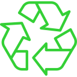

Você já parou para pensar no que acontece com o lixo depois que o jogamos na lixeira? A reciclagem é uma das soluções mais inteligentes que temos para não acumular resíduos no planeta.

O QUE É RECICLAGEM?

A ideia principal é simples: pegar materiais que seriam descartados (como plástico, papel, vidro e metal) e transformá-los em novos produtos.
Dessa forma, evitamos que esses materiais poluam a natureza e diminuímos a necessidade de extrair novos recursos — como cortar árvores ou usar mais petróleo — para fabricar as coisas que usamos no dia a dia.COMO FUNCIONA O CICLO?
A reciclagem é um processo que acontece em etapas e depende de nós para começar:
1 - Separação: Tudo começa em casa ou na escola, quando separamos o lixo reciclável do lixo comum nas lixeiras corretas. 2 - Coleta: Caminhões de coleta seletiva recolhem esse material e o levam para centros de triagem e cooperativas. 3 - Transformação: Nas indústrias, os materiais são limpos, triturados ou derretidos para virarem matéria-prima limpa e pronta para uso.
RECICLAR X REUTILIZAR
Essas duas ações ajudam muito o meio ambiente, mas não significam a mesma coisa:
Reutilizar: É dar uma nova função a um objeto sem mudar a estrutura física dele. Exemplo: Usar um pote de vidro vazio para guardar lápis ou moedas. Reciclar: É quando o material precisa ser processado pela indústria para mudar de forma. Exemplo: Derreter várias garrafas de plástico PET para fabricar o tecido de uma mochila nova.